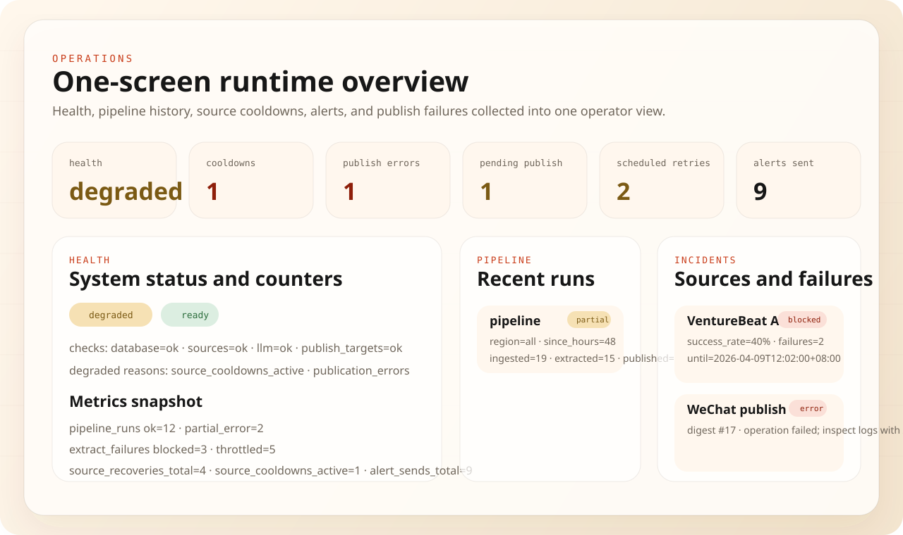

12
示例日报收录文章数，覆盖国内与国际 AI 新闻。
这不是截图集合，而是仓库自带的公开示例页。它展示中英样例日报、导出 JSON 结构、健康检查返回，以及管理控制台的真实界面，用来降低首次试用门槛。

12
示例日报收录文章数，覆盖国内与国际 AI 新闻。
4
同一套工作流支持的主要交付面：CLI、API、管理台、发布层。
1.0
导出 payload 的 schema 版本，方便下游工具固定兼容行为。
这张预览图对应控制台里的新运维总览区。它会把 `/health`、最近 pipeline、来源冷却、来源级告警和发布失败收成一屏。
